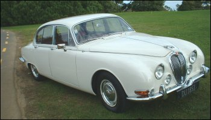

No Shortcuts
One day over ten years ago, the Arctic Princess limped into the driveway of 55 Richards Avenue, North Shore. Her upholstery was torn, the paint scratched, and one cobweb stuck drearily to her rear-view mirror. “Nice,” the family agreed stoically as Mark proudly patted the hood.
From then on, evening after evening, for five long years, Mark chipped, banged, sawed, and hammered away furiously far into the night, as he dismantled the 1965 Jaguar and rebuilt it into the flawless, gleaming, purring model she is today.
He was determined that the car should be one hundred percent authentic, right down to the last screw. Literally. It took Mark a year to track down one particular screw which suppliers said no longer existed. But mostly the car experts were very helpful, engaging in Mark’s enthusiasm for a restoration project that was like a work of art. “I even found people who were willing to do things for nothing.”
Certainly classic car enthusiasts share a unique rapport. Whenever Mark is cruising down the motorway and catches sight of another Jaguar he waves vigorously at the other driver, who returns a gracious acknowledgement. (That is, assuming Mark is driving the Princess. He has, on occasion, forgotten that he was driving an old red Mitsubishi station wagon, and waved and grinned broadly at a classic car driver, causing considerable astonishment and alarm.)
Mark could never have achieved this state of prestige had he not made absolutely sure he knew how to put the car back together again once it was disassembled. At one point the Jaguar existed only in little meticulously labelled bags stowed all over the garage. “I bagged and labelled every component, big or small, radiator grille or washer. It wasn’t always obvious how some components came apart and it could take me hours of experimentation just to dismantle one part. Putting it together again took over a year. I got very tired but didn’t want to stop for fear I’d never get started again.”
But now the Jaguar is a common sight gliding over the Harbour Bridge and back five days a week. Lately it’s been wearing white satin streamers on the weekends.
And Mark still hasn’t lost that thrill of satisfaction as he gets into the front seat and breathes in the rich smell of leather and varnish.
“I really enjoy driving this car.”